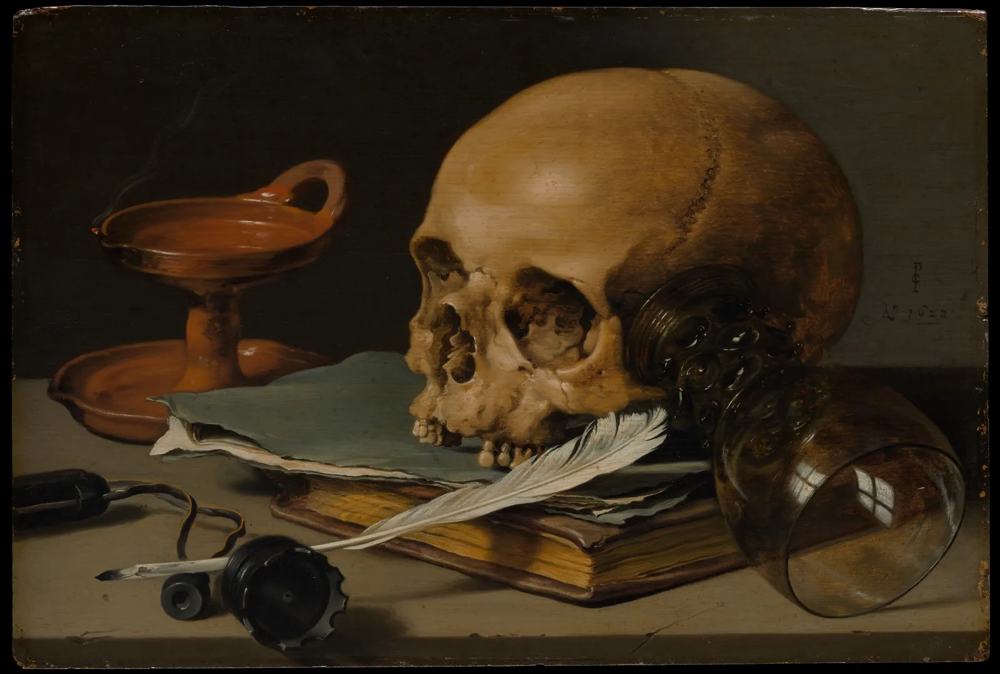
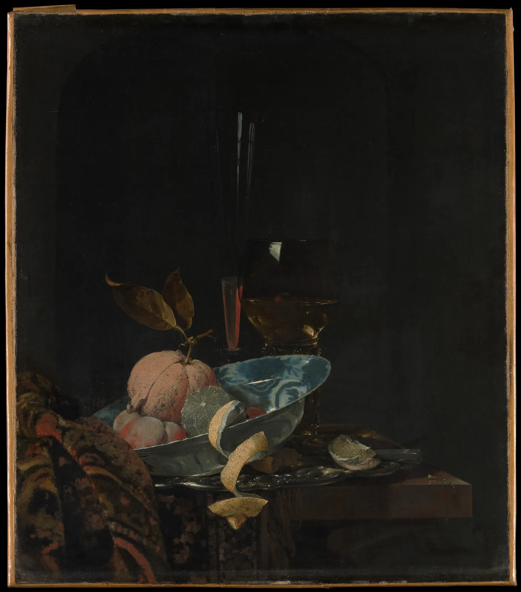
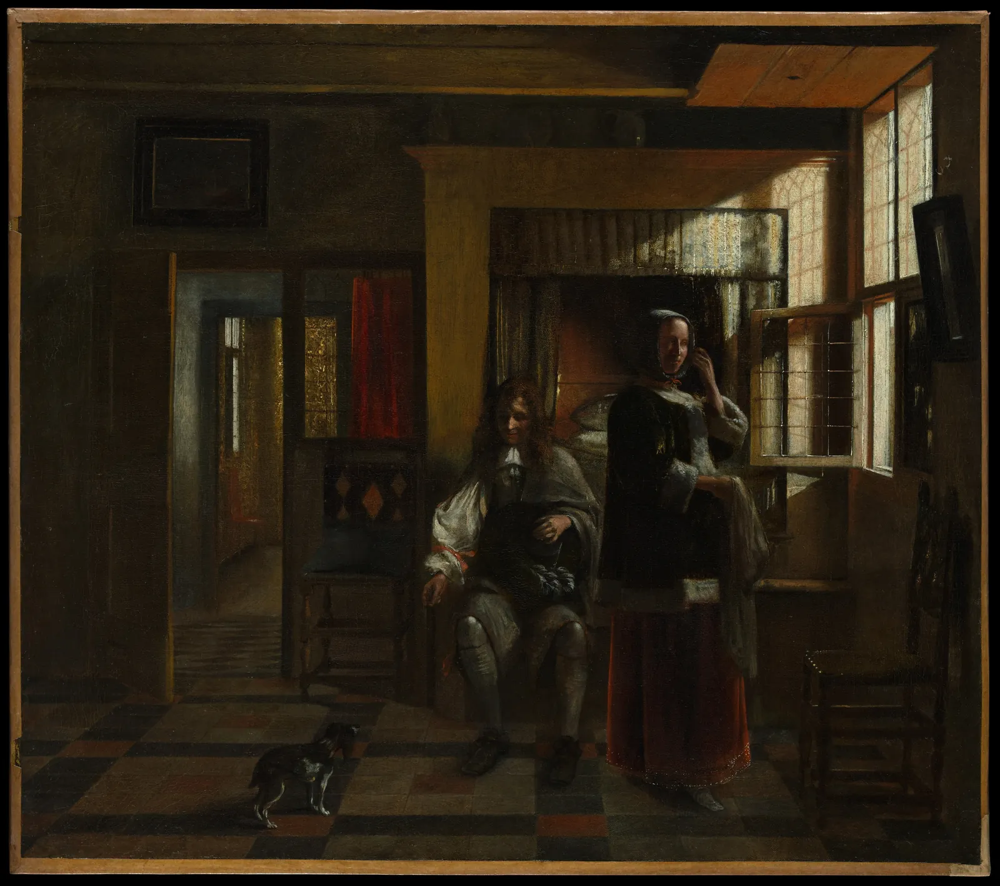
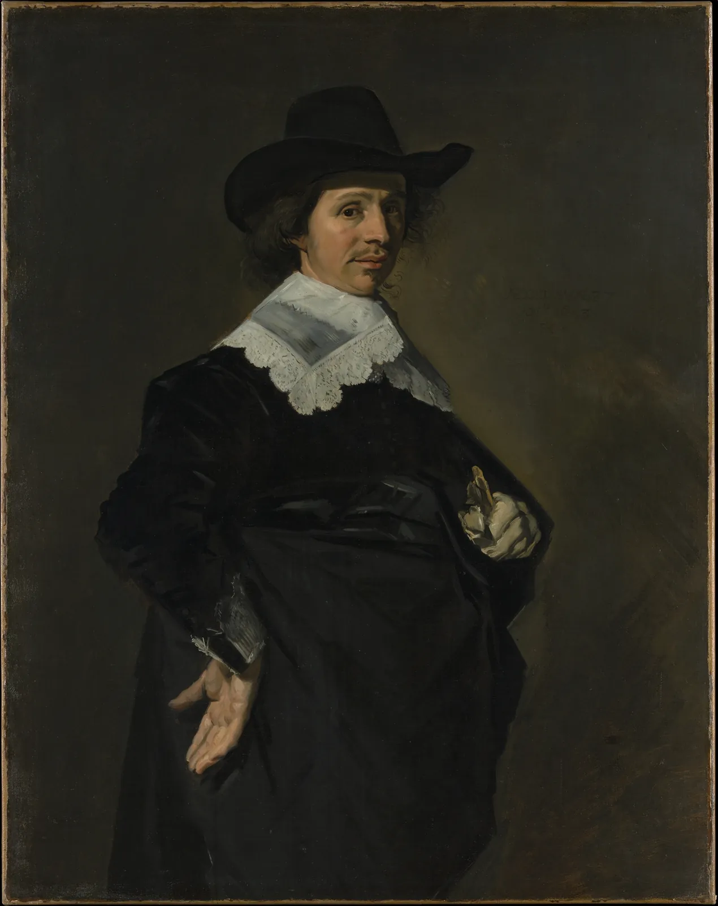

네덜란드 황금기
미술관의 17세기 네덜란드 전시실에 들어서면 먼저 그림의 크기에 놀란다. 앞 방의 제단화와 궁정 초상은 벽 하나를 차지하는데, 이 방의 정물은 공책 두 권만 하고 풍경은 창문 하나만 하다. 그림 속도 다르다. 성인과 신화 대신 해골과 굴 접시, 밀밭과 구름, 창가에서 물병을 든 여자가 있다. 이 장은 그 차이를 한 가지 질문으로 따라간다. 이 그림은 누가 샀을까. 주문자가 아니라 시장이 그림을 사기 시작했을 때 무엇이 그려졌고, 어떻게 그려졌는지를 색·구도·기법의 세 렌즈로 읽는다.
- 17세기 네덜란드 공화국에서 그림이 주문이 아니라 시장을 통해 팔리게 된 배경과, 그것이 그림의 크기·주제·분업에 남긴 흔적을 설명한다.
- 정물·풍경·실내·초상으로 나뉜 장르를 구별하고, 화가들이 한 장르에 특화한 이유를 말한다.
- 하이라이트의 크기와 모양이 은·백랍·유리·레몬의 질감을 구별하게 한다는 것을 시뮬레이터로 확인한다.
- 단색조 정물과 화려한 정물의 팔레트를 실제 작품에서 뽑아 비교하고, 바니타스 해석의 논쟁을 안다.
- 낮은 지평선의 풍경, 창빛이 거리에 따라 줄어드는 실내, 할스의 빠른 붓질을 실제 작품에서 읽는다.
이 그림은 누가 샀을까
앞 장들의 그림은 대부분 누군가가 먼저 주문했다. 교회가 제단화를, 군주와 귀족이 궁전의 천장화와 초상을, 부유한 상인 가문이 예배당의 벽화를 주문했다. 화가는 주제·크기·재료·때로는 들어갈 인물까지 정한 계약서를 받고 그렸다. 주문한 사람이 곧 그림을 볼 사람이었다. 4장의 렘브란트 「호메로스 흉상을 바라보는 아리스토텔레스」(1653)도 시칠리아의 수집가 안토니오 루포(Antonio Ruffo)의 주문으로 그려졌다.
17세기의 네덜란드 공화국(Dutch Republic)에서는 다른 길이 크게 열렸다. 스페인 왕실에 맞서 독립 전쟁을 치른 북부 일곱 주가 1579년 위트레흐트 동맹으로 묶였고, 1648년 뮌스터 조약으로 독립을 인정받았다. 이 나라의 공식 교회인 칼뱅파 개신교 교회는 예배당에 성상과 제단화를 두지 않았다. 1566년의 성상 파괴 운동 뒤로 교회는 가장 큰 주문자 자리에서 물러났다. 궁정의 규모도 이웃 왕국들보다 작았다. 대신 무역과 금융으로 부를 쌓은 도시의 시민들, 곧 상인·장인·관리·의사·양조업자가 집 벽에 걸 그림을 샀다.
이들은 화가에게 미리 주문하기보다 이미 그려진 그림을 골라 샀다. 그림은 화가의 작업실, 미술상의 가게, 시장과 정기 장터, 복권과 경매에서 팔렸다. 도시마다 화가들은 성 루가 길드(Guild of Saint Luke)에 가입해야 그림을 팔 수 있었다. 화가의 수호성인 루가의 이름을 딴 동업 조합으로, 회원 자격과 판매를 관리했다. 그림을 미리 그려 놓고 팔려면 잘 팔리는 주제를 빨리, 많이 그려야 했다. 그 결과가 다음 절에서 볼 장르의 분업이다.
얼마나 많은 그림이 팔렸을까. 경제사학자 아드 판 데르 바우더(Ad van der Woude, 1991)는 길드 기록, 화가 수, 유산 목록을 바탕으로 17세기 네덜란드에서 그려진 그림이 수백만 점 규모였다고 추정했다. 다만 이런 추정은 가정에 따라 폭이 아주 크고, 연구자마다 수치가 다르다. 더 확실한 증거는 유산 목록이다. 경제학자이자 미술사가 존 마이클 몬티아스(John Michael Montias)는 『델프트의 화가와 장인』(Artists and Artisans in Delft, 1982)에서 델프트 시민들의 유산 목록을 분석해, 그리 부유하지 않은 집에도 그림이 여러 점씩 걸려 있었음을 보였다. 그림은 소수의 사치품이 아니라 꽤 넓은 계층의 살림살이였다.
시장 그림의 첫 번째 흔적은 크기다. 주문받은 제단화는 성당의 벽에 맞춰 크게 그렸지만, 시장 그림은 시민의 집, 그것도 좁고 높은 운하 집의 방에 걸려야 했다. 아래 시뮬레이터는 이 장에서 볼 그림들을 소장처가 기록한 실제 크기 그대로 한 벽에 건다. 그림을 끌어 자리를 바꾸고, 누르면 크기가 나온다. 왼쪽의 사람은 키 165 cm다.
실제 크기로 한 벽에 걸기
벽에 걸어 보면 시장 그림이 대체로 작다는 것이 한눈에 보인다. 정물과 실내화는 대부분 한 변이 30~80 cm이고, 큰 풍경과 전신에 가까운 초상만 1 m를 넘는다. 작은 그림은 값이 싸고 운반이 쉽고, 좁은 방에도 걸 수 있었다. 그리고 가까이서 보는 그림이어서 세밀한 질감이 힘을 얻었다. 그 질감이 가장 빛난 장르가 정물이다.
장르의 분업
시장에 내놓을 그림을 미리 그리는 화가에게 가장 좋은 전략은 무엇일까. 한 가지를 아주 잘, 아주 빨리 그리는 것이다. 17세기 네덜란드 화가들은 대개 한 장르(Genre), 곧 그림 주제의 종류에 특화했다. 굴과 은잔만 그리는 화가, 겨울 얼음판만 그리는 화가, 교회 실내만 그리는 화가, 바다의 배만 그리는 화가가 있었다. 같은 주제를 반복하면 구도와 색의 공식이 손에 익어 그리는 속도가 붙고, 사는 사람도 "○○ 화가의 굴 정물"처럼 이름으로 고를 수 있었다.
| 장르 | 무엇을 그렸나 | 이 장의 예 |
|---|---|---|
| 정물 | 식탁 위의 음식·그릇, 꽃, 해골과 책(바니타스) | 클라스(1628), 헤다(1635), 칼프(1659) |
| 풍경 | 평평한 땅과 넓은 하늘, 강, 도시 전경, 겨울 얼음판 | 판 호이언(1646), 라위스달(1670년경) |
| 실내·장르화 | 집 안의 일상, 여관과 잔치, 편지 읽는 여자 | 데 호흐(1662~65년경), 페르메이르(1662년경) |
| 초상 | 개인·부부·단체 초상(대부분 주문) | 할스(1643) |
| 그 밖에 | 바다와 배, 교회 실내, 건축 풍경, 동물 | 본문에서 이름만 |
여기서 장르화(Genre painting)라는 말을 하나 짚어 두자. 넓게는 "장르"가 모든 주제 종류를 가리키지만, 미술사에서 장르화라고 하면 이름 없는 보통 사람들의 일상 장면을 그린 그림을 뜻한다. 데 호흐의 실내, 얀 스테인(Jan Steen)의 떠들썩한 잔칫집이 그렇다. 18세기 프랑스의 아카데미는 주제에 높낮이를 매겨, 역사화를 맨 위에, 정물을 맨 아래에 두었다(6장). 네덜란드 시장에서 가장 많이 팔린 것은 그 서열의 아래쪽 장르들이었다.
정물: 하이라이트가 질감을 말한다
정물(Still life)은 움직이지 않는 물건을 그린 그림이다. 네덜란드어로 "스틸레번"(stilleven)이라 했고, 이 말이 영어 still life의 뿌리가 되었다. 하를럼의 피터르 클라스(Pieter Claesz)와 빌럼 클라스 헤다(Willem Claesz Heda)는 1620~1640년대에 몇 가지 그릇과 음식만 놓은 소박한 식탁을 갈색과 회색, 은빛의 좁은 색으로 그렸다. 이런 정물을 흔히 단색조 정물(Monochrome banketje)이라 부른다. 색이 아니라 질감과 빛으로 승부하는 그림이다.

클라스의 그림에서 은과 유리와 뼈를 구별하게 하는 것은 무엇일까. 셋 다 회색과 갈색 사이의 비슷한 색이다. 차이는 하이라이트(Highlight), 곧 광원이 표면에 비쳐 생긴 가장 밝은 점의 크기와 모양, 그리고 그 둘레가 얼마나 급하게 어두워지는지에 있다. 매끈한 표면일수록 하이라이트가 작고 날카로우며, 거친 표면일수록 넓고 흐릿하다. 금속은 자기 색보다 둘레의 모습을 비추고, 유리는 뒤의 바탕이 비쳐 보인다. 아래에서 같은 크기의 공 네 개를 서로 다른 재질로 칠해 본다. 창(광원)을 끌어 빛의 방향을 바꾸고, 광택을 조절한다.
같은 공, 다른 재질: 하이라이트 읽기
하이라이트를 끄면 은 공은 그저 검은 공이 된다. 금속은 자기 몸으로는 빛을 거의 흩지 않고, 받은 빛을 한 방향으로 되돌려 보내기 때문이다. 화가에게 이것은 실용적인 지식이었다. 은잔을 은잔답게 그리려면 잔 자체보다 잔에 비친 창과 탁자, 그리고 작고 단단한 흰 점 하나를 그려야 한다. 반대로 레몬 껍질과 빵은 넓고 부드러운 밝은 면으로 그린다. 같은 흰 물감이라도 얼마나 작게, 얼마나 가장자리를 날카롭게 찍느냐가 재질을 바꾼다.
바니타스: 해골은 무엇을 말하나
클라스의 그림처럼 해골, 꺼진 등잔, 쓰러진 잔, 시든 꽃, 시계를 함께 놓은 정물을 바니타스(Vanitas)라고 부른다. 구약 성경 전도서의 "헛되고 헛되다"(vanitas vanitatum)에서 온 이름으로, 삶은 짧고 재물과 학문은 헛되다는 생각을 물건으로 보여 준다. 해골은 죽음을, 꺼진 등잔의 연기는 덧없음을, 책과 깃펜은 학문의 한계를 가리킨다고 읽는다.
그런데 모든 네덜란드 정물을 이런 숨은 뜻으로 읽어야 할까. 1960~70년대 미술사가 에디 더 용(Eddy de Jongh)은 당시의 상징 도감(엠블럼 책)과 그림을 맞대어, 일상 장면과 정물 속 물건들이 도덕적 교훈을 품은 경우가 많다고 주장했다. 반면 스베틀라나 알퍼스(Svetlana Alpers)는 『묘사의 예술』(The Art of Describing, 1983)에서 네덜란드 그림의 중심은 숨은 뜻보다 세계를 눈으로 보고 정확히 기록하려는 태도에 있다고 보았다. 지금은 대체로 그림마다 다르다고 본다. 해골과 꺼진 등잔이 함께 놓인 클라스의 그림은 바니타스로 읽을 근거가 분명하지만, 레몬 껍질 하나하나에 교훈이 있다고 단정하기는 어렵다. 그림 읽기 모임에서 이 둘을 함께 소개하는 이유다.

칼프의 그림에 나오는 청화백자는 이 책의 동아시아 부와 연결되는 고리다. 네덜란드 동인도회사(VOC, 1602년 설립)는 17세기에 중국 자기를 대량으로 유럽에 실어 날랐고, 그 무늬는 델프트의 도기 공방이 흉내 낼 만큼 인기가 있었다. 그림 속 사발은 "먼 곳의 귀한 물건"으로서 그림의 값어치를 높이는 소재였다. 같은 시기 동아시아 도자와 회화가 그 자체로 어떤 세계였는지는 10장과 11장에서 따로, 같은 무게로 본다.
헤다와 클라스의 단색조, 칼프의 과시 정물은 팔레트가 얼마나 다를까. 아래 시뮬레이터는 그림의 모든 점을 OKLab 색 공간에서 k-평균으로 묶어 주요 색 몇 개를 뽑는다. 오른쪽 아래 판은 뽑은 색을 명도(L*)와 채도(C*) 위에 놓는다. 다섯 그림의 평균 위치도 작은 점으로 함께 찍힌다. 그림을 바꿔 가며 점들이 어디로 옮겨 가는지 본다.
단색조와 과시 정물: 팔레트 뽑기
단색조 정물과 단색조 풍경이 같은 시기(대략 1620~1640년대)에 같은 도시들에서 함께 나타난 것은 우연이 아닐 것이다. 좁은 팔레트는 물감 값을 아끼고 그리는 속도를 높인다. 갈색 바탕 위에 몇 가지 색만 섞어 쓰면 붓을 빨리 놀릴 수 있다. 미술사가들은 이 "톤의 시기"를 시장 그림의 생산 방식과 연결해 설명하기도 한다. 다만 그것만으로 설명되지는 않는다. 좁은 색은 그 자체로 회색 하늘과 습한 공기, 은과 백랍의 차가운 광택에 어울리는 선택이기도 했다. 1650년대 이후 칼프의 그림에서 색이 다시 선명해지고 라위스달의 그림에서 색상의 폭이 넓어지는 것도 같은 시장 안의 변화다.
풍경: 낮은 지평선과 넓은 하늘
네덜란드 땅은 낮고 평평하다. 이 나라의 풍경화가들은 그 평평함을 약점이 아니라 소재로 삼았다. 지평선을 화면 아래쪽으로 한껏 끌어내리고, 그 위를 거대한 구름과 하늘로 채웠다. 얀 판 호이언(Jan van Goyen)은 1640년대에 하를럼 근처의 들판과 호수를 누런 회색의 좁은 색으로, 빠른 붓질로 그렸다. 한 세대 뒤의 야코프 판 라위스달(Jacob van Ruisdael)은 같은 낮은 지평선 위에 무겁고 덩어리진 구름을 쌓고, 구름 사이로 떨어지는 빛이 밀밭을 띠처럼 비추게 했다.
구도의 규칙을 떠올려 보자. 흔히 지평선은 화면을 3분할한 선 근처에 두라고 한다(CompositionBook). 이 그림들은 그 규칙을 얼마나 지킬까. 아래 시뮬레이터에서 지평선 손잡이를 끌어 이 책이 정하는 지평선을 긋는다. 처음 위치는 밝고 푸른 하늘이 어둡고 누런 땅으로 바뀌는 곳을 픽셀에서 찾은 자동 추정값이다.
지평선을 끌어 하늘의 몫 재기
판 호이언은 3분할 규칙에서 크게 벗어나 있고, 라위스달은 규칙에 가깝다. 하지만 둘 다 하늘이 화면의 주인이다. 그리고 판 호이언의 벗어남은 그 자체로 그림의 주제다. 하늘이 화면의 대부분을 차지하자 그림은 땅의 사물보다 날씨와 빛, 공기를 그리게 된다. 판 호이언의 화면 맨 아래 가느다란 땅의 띠에는 교회 탑과 풍차가 바늘처럼 서 있고, 그 작음이 하늘의 크기를 잰다. 규칙은 출발점일 뿐이다. 무엇을 그리고 싶은지가 정해지면 지평선은 거기에 맞춰 내려가거나 올라간다.
실내: 창에서 들어오는 빛
델프트의 요하네스 페르메이르(Johannes Vermeer)는 1653년 성 루가 길드에 가입해 평생 고향에서 일했고, 지금 전하는 그림은 서른몇 점에 그친다. 시장을 위해 많이, 빨리 그린 동료들과 달리 아주 천천히 그렸다. 몬티아스는 델프트의 수집가 피터르 판 라위벤(Pieter van Ruijven)이 그의 그림을 많이 사들인 후원자였을 것이라는 가설을 내놓았다. 문서로 확정된 것은 아니지만, 페르메이르의 그림이 익명의 시장보다 가까운 몇몇 수집가에게 팔렸을 가능성을 보여 준다. 같은 시장 안에도 길이 여럿이었다.

뒤의 흰 벽은 왜 고르게 밝지 않을까. 창은 크기가 있는 광원이다. 벽의 한 점이 받는 빛은 그 점에서 창이 얼마나 크게, 얼마나 정면으로 보이는지로 정해진다. 창 바로 옆의 벽은 창을 비스듬히, 그러나 가까이에서 보고, 멀리 떨어진 벽은 창을 작게 본다. 이것을 식으로 쓰면 창의 작은 조각 하나하나가 보내는 빛을 거리의 제곱으로 나누고 두 면의 기울기를 곱해 더하는 꼴이 된다.
아래 시뮬레이터는 이 식으로 방 뒤 벽의 밝기를 계산한다. 창은 왼쪽 벽에 있다. 창을 뒷벽에서 멀리 옮기거나, 창의 높이를 바꾸고, 벽 위의 탐침을 끌어 그 점의 밝기를 본다.
창에서 멀어지는 벽: 면 광원의 그라데이션
계산으로 보면 처음 상태에서 벽의 두 끝은 빛을 7배 넘게 다르게 받는다. 그런데 명도로 바꾸면 흰색 가까이에서 중간 회색쯤까지, 눈금의 절반 정도다. 화가가 이 그라데이션을 그리는 데 쓰는 것은 바로 이 작은 명도 차이, 대개 회색 몇 단계다. 페르메이르의 흰 벽은 창 옆의 따뜻한 흰색에서 먼 쪽의 서늘한 회색까지 아주 좁은 폭 안에서 천천히 바뀐다. 그래서 벽이 평면으로 보이지 않고 공기를 품은 공간으로 보인다.

초상과 붓질: 할스의 빠른 손
초상은 네덜란드에서도 주로 주문으로 그렸다. 시민들은 결혼, 승진, 조합의 기념일에 자기 얼굴을 남겼다. 하를럼의 프란스 할스(Frans Hals)는 그 초상을 아주 다르게 그렸다. 같은 시대의 많은 초상화가가 붓 자국을 지워 매끈한 표면을 만들었다면, 할스는 붓 자국을 그대로 남겼다. 소매와 손, 옷깃의 레이스를 가까이서 보면 몇 번의 빠른 붓질이 겹쳐 있을 뿐이다.

할스의 방식은 마른 층 위에 얇은 층을 겹쳐 올리는 글레이즈(3장)와 다르다. 아래층이 아직 젖어 있을 때 다음 붓질을 올려 한 번에 마무리하는 쪽에 가깝다. 이런 방식을 흔히 알라 프리마(Alla prima), 곧 "첫 번에"라고 부른다. 할스가 모든 그림을 한 번에 그렸다는 뜻은 아니며, 밑칠과 여러 단계가 있었다는 분석도 있다. 하지만 마지막 표면의 붓질이 빠르고 선명하게 남아 있는 것은 분명하다. 19세기 후반에 그의 붓질이 다시 높이 평가된 이야기는 8장의 시대와 이어진다.
할스의 초상과 페르메이르의 실내는 같은 나라, 같은 세기의 그림인데 표면은 정반대다. 하나는 붓 자국을 드러내 손의 속도를 보여 주고, 다른 하나는 붓 자국을 감춰 빛의 고요를 보여 준다. 시장 그림의 세계는 하나의 양식이 아니라 여러 손의 경쟁이었다.
네덜란드 실내 설계하기
마지막 시뮬레이터에서 이 장의 도구를 모아 데 호흐와 페르메이르 풍의 방 하나를 직접 짠다. 바둑판무늬 대리석 바닥, 왼쪽 벽의 창, 그리고 서 있는 사람 하나. 소실점 손잡이를 끌면 보는 사람의 눈높이와 좌우 위치가 바뀌고, 사람 발밑의 손잡이를 끌면 방 안에서 사람의 자리가 바뀐다. 바닥과 벽의 밝기는 앞에서 본 면 광원 식으로 계산한다.
창이 있는 방: 눈높이와 빛과 사람
사람의 머리가 지평선과 어떻게 만나는지는 보는 사람이 어디에 서 있는지를 알려 준다. 그림 속 사람들의 머리가 모두 지평선 근처에 있으면 우리는 그들과 같은 바닥에 서 있는 느낌을 받고, 머리가 지평선 위로 솟으면 앉거나 낮은 곳에서 올려다보는 느낌이 든다. 그림 5에서 바닥 줄눈을 눈으로 이어 소실점 높이를 짐작해 보고, 서 있는 여자와 앉은 남자의 머리가 그 높이와 어떻게 만나는지 비교해 보자. 눈짐작은 쉽게 틀리므로, 실제 그림의 소실점은 3장에서 한 것처럼 줄눈 몇 개를 직접 그어 확인해야 한다.
창의 빛은 사람을 반으로 나눈다. 창 쪽은 밝고 반대쪽은 어둡다. 사람을 창에서 멀리 옮기면 밝은 쪽마저 가라앉아 방의 어둠에 녹는다. 네덜란드 실내 화가들이 인물을 거의 언제나 창 가까이, 빛이 옆에서 오는 자리에 세운 이유를 여기서 볼 수 있다. 앞에서 본 페르메이르의 여인도, 데 호흐의 여인도 창 가까이 서 있다.
서윤의 작업 노트
4회차, "이 그림은 누가 샀을까?"
4회차는 9월 25일 토요일이다. 서윤은 그 주 화요일 저녁, 지난 회차 끝에 대학생 단골이 남긴 질문 카드를 다시 꺼냈다. "제단화도 아니고 왕도 아닌데, 이런 그림은 누가 샀어요? 해골 그림을 집에 걸어요?" 서윤의 첫 안은 네덜란드 황금기의 명작 다섯 점을 연대순으로 띄우고 화가의 생애를 소개하는 것이었다. 도경은 목록을 보더니 물었다. "그 질문에 답하려면 먼저 그림의 크기부터 보여 줘야 하지 않을까? 사진으로 보면 다 같은 크기잖아."
서윤은 이 장의 첫 시뮬레이터로 그림들을 한 벽에 걸어 보았다. The Met이 기록한 크기로 계산하면 클라스의 정물은 24.1 × 35.9 cm, 넓이 약 865 cm²로 A4 용지 약 1.4장이다. 렘브란트의 주문작 「아리스토텔레스」는 143.5 × 136.5 cm, 약 19,588 cm²로 클라스 정물의 약 22.6배다. 서윤은 모임 첫머리에 화면 대신 종이를 쓰기로 했다. 클라스 정물만 한 종이(24 × 36 cm)와 라위스달의 「밀밭」만 한 종이(100 × 130 cm, 큰 전지를 이어 붙인다)를 벽에 실제 크기로 붙여 두고, 참가자들에게 "어느 방에 걸렸을까"부터 묻는 것이다.
팔레트 시뮬레이터로 뽑은 숫자도 카드에 넣었다. 이 책의 모델로 계산하면 헤다 정물의 평균 채도는 C* 약 9.6이고 가장 선명한 5%도 약 17.6에 그친다. 칼프는 평균 채도가 약 4.9로 오히려 더 낮지만, 가장 선명한 5%는 약 28.4로 헤다의 1.6배다. "어둠은 더 넓게, 색은 더 좁고 세게"가 카드의 한 줄이 되었다. 도경은 숫자보다 하이라이트 시뮬레이터를 먼저 띄우자고 했다. "은잔이 왜 은잔으로 보이는지 알면, 사람들이 그다음부터는 그림에 코를 박고 볼 거야." 바니타스는 더 용과 알퍼스의 두 읽기를 함께 소개하고, 해골은 분명한 상징이지만 레몬 껍질까지 교훈으로 읽을지는 각자 정하게 하기로 했다.
목록은 다섯 점으로 정했다. 장르가 겹치지 않게 정물 둘, 풍경 하나, 실내 하나, 초상 하나. 페르메이르는 실내 자리를 두고 데 호흐와 경합했는데, 빛의 그라데이션을 보여 주는 데는 페르메이르가, "누가 샀나"라는 질문에는 시장 화가 데 호흐가 더 맞았다. 서윤은 페르메이르를 넣고 데 호흐는 예비 그림으로 두었다. 카드는 1장에서 정한 양식(색·구도·기법 세 줄과 질문 하나)을 따랐다.
| 순서 | 작품 | 색 | 구도 | 기법 | 질문 |
|---|---|---|---|---|---|
| 1 | 클라스, 「해골과 깃펜이 있는 정물」, 1628 | 회색·갈색·누런빛의 좁은 팔레트 | 탁자 모서리를 따라 왼쪽 아래에서 오른쪽 위로 쌓인 물건 | 작고 날카로운 하이라이트로 유리·뼈·깃털을 구별 | 이 그림은 어느 방, 누구의 책상 위에 걸렸을까? |
| 2 | 칼프, 「만력 사발이 있는 정물」, 1659 | 넓은 어둠 속 몇 곳의 선명한 노랑·주황·붉은색 | 사발과 레몬 껍질이 빛의 중심, 나머지는 어둠에 잠김 | 청화백자의 푸른 무늬와 유리의 반사 | 이 사발은 어디서, 어떻게 왔을까? |
| 3 | 라위스달, 「밀밭」, 1670년경 | 하늘의 푸른 회색과 밀밭의 금빛 | 지평선은 아래 3분할선 근처, 하늘이 약 70% | 구름 사이로 떨어진 빛의 띠 | 지평선을 화면 가운데로 올리면 무엇이 사라질까? |
| 4 | 페르메이르, 「물병을 든 젊은 여인」, 1662년경 | 흰 벽의 아주 좁은 명도 그라데이션 | 왼쪽 창 하나, 인물은 창 가까이 | 흐린 빛 점과 부드러운 경계 | 벽의 가장 밝은 곳과 가장 어두운 곳은 어디인가? |
| 5 | 할스, 「파울뤼스 페르스휘르」, 1643 | 여러 가지 검정과 흰 레이스 | 허리에 얹은 손과 내민 손이 만드는 대각선 | 젖은 물감 위의 빠른 붓질 | 몇 걸음 떨어져야 손이 손으로 보일까? |
정 선생님은 미리 메시지를 보냈다. "학교에서 페르메이르를 가르칠 때 늘 '빛의 화가'라고만 했는데, 그 빛이 숫자로도 보이나요?" 서윤은 창빛 시뮬레이터의 화면을 캡처해 답장했다. 이 책의 모델로 계산하면 창 쪽 끝이 먼 쪽 끝보다 빛을 약 7.4배 받는데, 명도로는 L* 약 49, 100 눈금의 절반쯤 차이라는 것. 정 선생님의 답은 짧았다. "그럼 화가는 '몇 배'를 '몇 단계'로 줄여 그린 거네요."
핵심 정리
- 17세기 네덜란드 공화국에서는 칼뱅파 교회가 제단화를 주문하지 않았고, 도시의 시민들이 작업실·미술상·장터에서 이미 그려진 그림을 골라 샀다. 주문 경로도 남아 있었지만(초상, 단체 초상) 시장의 비중이 커졌다.
- 시장 그림은 대체로 작았고(한 변 30~80 cm가 흔함), 화가들은 정물·풍경·실내·초상 같은 한 장르에 특화해 같은 주제를 빠르게 반복했다.
- 재질은 하이라이트의 크기와 날카로움, 그리고 표면이 둘레를 얼마나 비추는지로 구별된다. 금속은 하이라이트를 빼면 검은 덩어리가 되고, 거친 표면은 넓고 부드러운 밝은 면을 갖는다.
- 1620~40년대 하를럼의 단색조 정물·풍경은 좁은 팔레트를, 1650년대 이후 칼프의 과시 정물은 넓은 어둠 속 작은 선명한 색을 썼다. 바니타스의 숨은 뜻 읽기는 그림마다 근거가 다르며 학계의 논쟁이 있다.
- 네덜란드 풍경화는 지평선을 화면 아래쪽으로 끌어내려 하늘과 날씨를 주제로 삼았다. 3분할 규칙에서 벗어난 것이 곧 그림의 내용이다.
- 창은 크기가 있는 광원이라 벽과 바닥의 밝기는 거리와 각도에 따라 서서히 줄어든다. 밝기의 몇 배 차이가 명도로는 몇 단계로 줄어들고, 화가는 그 좁은 단계로 공기와 깊이를 그렸다.
- 할스의 드러난 붓질과 페르메이르의 감춘 붓질처럼, 같은 시장 안에서도 표면과 속도가 정반대인 그림들이 경쟁했다.
확인 퀴즈
1. 17세기 네덜란드 공화국에서 정물·풍경·실내화가 많이 그려진 배경으로 가장 알맞은 것은?
2. 같은 크기의 회색 공 세 개에 하이라이트를 그렸다. A는 넓고 흐릿한 밝은 면, B는 작고 날카로운 흰 점과 아래쪽에 탁자의 반사, C는 하이라이트가 없다. 은잔처럼 보일 가능성이 가장 높은 것은?
3. 판 호이언의 1646년 풍경에서 픽셀로 찾은 하늘과 땅의 경계는 화면 위에서 약 4분의 3이 넘는 높이에 있다. 이에 대한 설명으로 가장 알맞은 것은?
4. 창이 하나 있는 방에서 뒷벽의 창 쪽 끝이 먼 쪽 끝보다 빛을 몇 배 더 받는다고 계산되었다. 화가가 이 벽을 그릴 때 가장 알맞은 접근은?